Code
Score.pred.sev <- function(mu, x, phi) {
Sc.log <- -sum(dgamma(x, shape = 1/phi, scale = mu*phi, log=TRUE))
Sc.MSE <- sum((x - mu)^2)/1000000
return(c(Sc.log, Sc.MSE))
}Using only traditional covariates, the objective of this chapter is to propose various statistical models for estimation and variable selection to predict the number of claims. More specifically, the following model families will be examined:
As mentioned in the theory review chapter, to compare models and strike a balance between bias and variance while avoiding overfitting, an interesting approach is to assess the prediction quality of models when applied to new data. The following R script presents a function for calculating various scores:
To analyze severities, we define two scores:
Score.pred.sev <- function(mu, x, phi) {
Sc.log <- -sum(dgamma(x, shape = 1/phi, scale = mu*phi, log=TRUE))
Sc.MSE <- sum((x - mu)^2)/1000000
return(c(Sc.log, Sc.MSE))
}The analyses in this chapter will be conducted using the same data as in the previous chapter. Here is the list of packages that will be used:
library(tidyverse)
library(vtable)
library(rpart)
library(repr)
library(rpart.plot)
#library(rfCountData)
library(gam)
library(sjPlot)
library(glmnet)dataS <- read.csv('Data/Synthetic.csv')
#dataS <- read.csv("~/Library/CloudStorage/Dropbox/AquiLoss/CAS/Telematics/telematics_syn-032021.csv")
data <- dataS[dataS$AMT_Claim > 0,]
data$M_Claim <- data$AMT_Claim/data$NB_Claim
# Modifications
data <- data %>%
mutate(Territory = as.factor(Territory)) %>%
select(-c('Annual.pct.driven', 'Annual.miles.drive'))
data.select <- data
# Train-test et folds
set.seed(123)
train <- data.select %>% sample_frac(0.8, replace = FALSE)
test <- data.select %>% anti_join(train)
test <- test[-640,]
train2 <- train %>%
mutate(Miles.per.day = Total.miles.driven/Duration,
max.day = pmax(Pct.drive.mon, Pct.drive.tue, Pct.drive.wed, Pct.drive.thr, Pct.drive.fri, Pct.drive.sat, Pct.drive.sun),
min.day = pmin(Pct.drive.mon, Pct.drive.tue, Pct.drive.wed, Pct.drive.thr, Pct.drive.fri, Pct.drive.sat, Pct.drive.sun),
max.min = max.day - min.day,
Dayformax = 'Monday',
Dayformax = ifelse(max.day == Pct.drive.tue, 'Tuesday', Dayformax),
Dayformax = ifelse(max.day == Pct.drive.wed, 'Wednesday', Dayformax),
Dayformax = ifelse(max.day == Pct.drive.thr, 'Thursday', Dayformax),
Dayformax = ifelse(max.day == Pct.drive.fri, 'Friday', Dayformax),
Dayformax = ifelse(max.day == Pct.drive.sat, 'Saturday', Dayformax),
Dayformax = ifelse(max.day == Pct.drive.sun, 'Sunday', Dayformax),
Dayformin = 'Monday',
Dayformin = ifelse(min.day == Pct.drive.tue, 'Tuesday', Dayformin),
Dayformin = ifelse(min.day == Pct.drive.wed, 'Wednesday', Dayformin),
Dayformin = ifelse(min.day == Pct.drive.thr, 'Thursday', Dayformin),
Dayformin = ifelse(min.day == Pct.drive.fri, 'Friday', Dayformin),
Dayformin = ifelse(min.day == Pct.drive.sat, 'Saturday', Dayformin),
Dayformin = ifelse(min.day == Pct.drive.sun, 'Sunday', Dayformin),
expo = Duration/365.25)
transform.fct <- function(var){
df <- train2 %>% mutate(var_ = get(var)*Total.miles.driven/(1000*Duration))
q99 <- quantile(df$var_, 0.99)
df <- df %>% mutate(var_ = ifelse(var_ > q99, q99, var_))
#colnames(df)[ncol(df)] <- paste0(var, '_')
return(df)
}
train2 <- transform.fct("Brake.06miles")
train2 <- transform.fct("Brake.08miles")
train2 <- transform.fct("Brake.09miles")
train2 <- transform.fct("Brake.11miles")
train2 <- transform.fct("Brake.14miles")
train2 <- transform.fct("Accel.06miles")
train2 <- transform.fct("Accel.08miles")
train2 <- transform.fct("Accel.09miles")
train2 <- transform.fct("Accel.11miles")
train2 <- transform.fct("Accel.12miles")
train2 <- transform.fct("Accel.14miles")
train2 <- transform.fct("Left.turn.intensity08")
train2 <- transform.fct("Left.turn.intensity09")
train2 <- transform.fct("Left.turn.intensity10")
train2 <- transform.fct("Left.turn.intensity11")
train2 <- transform.fct("Left.turn.intensity12")
train2 <- transform.fct("Right.turn.intensity08")
train2 <- transform.fct("Right.turn.intensity09")
train2 <- transform.fct("Right.turn.intensity10")
train2 <- transform.fct("Right.turn.intensity11")
train2 <- transform.fct("Right.turn.intensity12")
# Create folds
nb.fold <- 5
fold <- sample(1:nb.fold, nrow(train2), replace = TRUE)
train2$fold <- fold
##
test2 <- test %>%
mutate(Miles.per.day = Total.miles.driven/Duration,
max.day = pmax(Pct.drive.mon, Pct.drive.tue, Pct.drive.wed, Pct.drive.thr, Pct.drive.fri, Pct.drive.sat, Pct.drive.sun),
min.day = pmin(Pct.drive.mon, Pct.drive.tue, Pct.drive.wed, Pct.drive.thr, Pct.drive.fri, Pct.drive.sat, Pct.drive.sun),
max.min = max.day - min.day,
Dayformax = 'Monday',
Dayformax = ifelse(max.day == Pct.drive.tue, 'Tuesday', Dayformax),
Dayformax = ifelse(max.day == Pct.drive.wed, 'Wednesday', Dayformax),
Dayformax = ifelse(max.day == Pct.drive.thr, 'Thursday', Dayformax),
Dayformax = ifelse(max.day == Pct.drive.fri, 'Friday', Dayformax),
Dayformax = ifelse(max.day == Pct.drive.sat, 'Saturday', Dayformax),
Dayformax = ifelse(max.day == Pct.drive.sun, 'Sunday', Dayformax),
Dayformin = 'Monday',
Dayformin = ifelse(min.day == Pct.drive.tue, 'Tuesday', Dayformin),
Dayformin = ifelse(min.day == Pct.drive.wed, 'Wednesday', Dayformin),
Dayformin = ifelse(min.day == Pct.drive.thr, 'Thursday', Dayformin),
Dayformin = ifelse(min.day == Pct.drive.fri, 'Friday', Dayformin),
Dayformin = ifelse(min.day == Pct.drive.sat, 'Saturday', Dayformin),
Dayformin = ifelse(min.day == Pct.drive.sun, 'Sunday', Dayformin),
expo = Duration/365.25)
transform.fct <- function(var){
df <- test2 %>% mutate(var_ = get(var)*Total.miles.driven/(1000*Duration))
q99 <- quantile(df$var_, 0.99)
df <- df %>% mutate(var_ = ifelse(var_ > q99, q99, var_))
#colnames(df)[ncol(df)] <- paste0(var, '_')
return(df)
}
test2 <- transform.fct("Brake.06miles")
test2 <- transform.fct("Brake.08miles")
test2 <- transform.fct("Brake.09miles")
test2 <- transform.fct("Brake.11miles")
test2 <- transform.fct("Brake.14miles")
test2 <- transform.fct("Accel.06miles")
test2 <- transform.fct("Accel.08miles")
test2 <- transform.fct("Accel.09miles")
test2 <- transform.fct("Accel.11miles")
test2 <- transform.fct("Accel.12miles")
test2 <- transform.fct("Accel.14miles")
test2 <- transform.fct("Left.turn.intensity08")
test2 <- transform.fct("Left.turn.intensity09")
test2 <- transform.fct("Left.turn.intensity10")
test2 <- transform.fct("Left.turn.intensity11")
test2 <- transform.fct("Left.turn.intensity12")
test2 <- transform.fct("Right.turn.intensity08")
test2 <- transform.fct("Right.turn.intensity09")
test2 <- transform.fct("Right.turn.intensity10")
test2 <- transform.fct("Right.turn.intensity11")
test2 <- transform.fct("Right.turn.intensity12")A baseline model corresponding to a Generalized Linear Model (GLM) with intercept and predicting for each contract only the observed mean multiplied by the observed frequency is used as a point of comparison.
## Model on each fold
Result_ <- data.frame()
Result2_ <- data.frame()
for(i in 1:nb.fold) {
learn <- train2[train2$fold != i,]
valid <- train2[train2$fold == i,]
mean <- sum(learn$AMT_Claim)/sum(learn$NB_Claim)
variance <- sd(learn$AMT_Claim)^2
phi <- variance/mean(learn$AMT_Claim)^2
learn$pred.base <- mean*learn$NB_Claim
valid$pred.base <- mean*valid$NB_Claim
Result_ <- rbind(Result_, c(i, Score.pred.sev(valid$pred.base, valid$AMT_Claim, phi)/nrow(valid)))
Result2_ <- rbind(Result2_, c(i, Score.pred.sev(valid$pred.base, valid$AMT_Claim, phi)))
}
## Show results
colnames(Result_) <- c('Fold', "Sc.log", "Sc.MSE")
colnames(Result2_) <- c('Fold', "Sc.log", "Sc.MSE")
tot <- colSums(Result2_)/nrow(train2)
tot$Fold <- 'Total'
Result_ <- rbind(Result_ , tot)
Result.base <- Result_
Base <- Result.base[nb.fold+1,]
knitr::kable(Result_, align = "ccc", digits = c(0, 5, 5), format.args = list(big.mark = ","))%>%
kable_styling(bootstrap_options = "striped", full_width = F) | Fold | Sc.log | Sc.MSE |
|---|---|---|
| 1 | 9.28096 | 48.72725 |
| 2 | 9.28378 | 21.80556 |
| 3 | 9.30844 | 31.17175 |
| 4 | 9.34049 | 30.61554 |
| 5 | 9.26105 | 18.96634 |
| Total | 9.29513 | 30.43693 |
The model is, therefore, estimated on the entire train database, and the predictions are made on the test database, which was not used during the calibration phase.
mean <- sum(train2$AMT_Claim)/sum(train2$NB_Claim)
variance <- sd(train2$AMT_Claim)^2
phi <- variance/mean(train2$AMT_Claim)^2
test2$pred.base <- mean*test2$NB_Claim
Result_ <- data.frame(t(Score.pred.sev(test2$pred.base, test2$AMT_Claim, phi)/nrow(test2)))
Result_ <- cbind('Base', Result_)
colnames(Result_) <- c("Model", "Sc.log", "Sc.MSE")
Result_all <- Result_
knitr::kable(Result_all, align = "ccc", digits = c(0, 5, 5), format.args = list(big.mark = ","))%>%
kable_styling(bootstrap_options = "striped", full_width = F) | Model | Sc.log | Sc.MSE |
|---|---|---|
| Base | 9.29504 | 21.82679 |
A first regression approach is attempted using only the traditional categorical variables, namely:
Even though territory should also be considered since it consists of more than fifty different factors, it will not be integrated into the model immediately.
As we saw in the overview of variables in a previous section, the insured gender did not appear to be an important variable for predicting the number of claims. This GLM approach confirms this observation. Therefore, this variable is excluded from the model. In the table below, we can see the impact of adding traditional variables on the prediction quality.
Below are the prediction scores of the model with all categorical covariates. As expected, the addition of segmentation variables improves the prediction scores compared to the simple baseline model with only an intercept.
## Model
score.base <- as.formula(M_Claim ~ 1)
score.glm <- as.formula(M_Claim ~ Insured.sex + Marital + Car.use + Region )
## Model on each fold
Result_ <- data.frame()
Result2_ <- data.frame()
for(i in 1:nb.fold) {
learn <- train2[train2$fold != i,]
valid <- train2[train2$fold == i,]
glm.fit <- glm(score.glm, family = Gamma(link = "log"), data = learn)
learn$pred.base <- predict(glm.fit, newdata=learn, type='response')*learn$NB_Claim
valid$pred.base <- predict(glm.fit, newdata=valid, type='response')*valid$NB_Claim
phi <- summary(glm.fit)$dispersion
Result_ <- rbind(Result_, c(i, Score.pred.sev(valid$pred.base, valid$AMT_Claim, phi)/nrow(valid)))
Result2_ <- rbind(Result2_, c(i, Score.pred.sev(valid$pred.base, valid$AMT_Claim, phi)))
}
## Model on all data from train
glm.base <- glm(score.base, family = Gamma(link = "log"), data = train2)
glm.fit <- glm(score.glm, family = Gamma(link = "log"), data = train2)
train2$pred.glm1 <- predict(glm.fit, newdata=train2, type='response')*train2$NB_Claim
Result.glm1 <- Result_
## Show results
colnames(Result_) <- c('Fold', "Sc.log", "Sc.MSE")
colnames(Result2_) <- c('Fold', "Sc.log", "Sc.MSE")
tot <- colSums(Result2_)/nrow(train2)
tot$Fold <- 'Total'
Result_ <- rbind(Result_ , tot)
Result_ <- rbind(Result_, Base)
Result_[nb.fold+2,1] <- 'Improvement'
for(i in 2:3){
Result_[nb.fold+2,i] <- Result_[nb.fold+1,i] - Result_[nb.fold+2,i]
}
rownames(Result_) <- NULL
knitr::kable(Result_, align = "ccc", digits = c(0, 5, 5), format.args = list(big.mark = ","))%>%
kable_styling(bootstrap_options = "striped", full_width = F) | Fold | Sc.log | Sc.MSE |
|---|---|---|
| 1 | 9.26014 | 47.85313 |
| 2 | 9.25790 | 22.01984 |
| 3 | 9.28552 | 31.20756 |
| 4 | 9.31168 | 30.29863 |
| 5 | 9.23947 | 18.59595 |
| Total | 9.27110 | 30.17198 |
| Improvement | -0.02403 | -0.26495 |
score.glm <- as.formula(M_Claim ~ Insured.sex + Marital + Car.use + Region )
glm.fit <- glm(score.glm, family = Gamma(link = "log"), data = train2)
test2$pred.base <- predict(glm.fit, newdata=test2, type='response')*test2$NB_Claim
phi <- summary(glm.fit)$dispersion
Result_ <- data.frame(t(Score.pred.sev(test2$pred.base, test2$AMT_Claim, phi)/nrow(test2)))
Result_ <- cbind('GLM (trad.)', Result_)
colnames(Result_) <- c("Model", "Sc.log", "Sc.MSE")
Result_all <- rbind(Result_all, Result_)
knitr::kable(Result_all, align = "ccc", digits = c(0, 5, 5), format.args = list(big.mark = ","))%>%
kable_styling(bootstrap_options = "striped", full_width = F) | Model | Sc.log | Sc.MSE |
|---|---|---|
| Base | 9.29504 | 21.82679 |
| GLM (trad.) | 9.27546 | 21.77177 |
The table below shows the estimators obtained for the GLM-Gamma approach and compares them with the baseline model having only an intercept.
## Model
score.base <- as.formula(M_Claim ~ 1)
score.glm <- as.formula(M_Claim ~ Insured.sex + Marital + Car.use + Region)
## Model on all data from train
glm.base <- glm(score.base, family = Gamma(link = "log"), data = train2)
glm.fit <- glm(score.glm, family = Gamma(link = "log"), data = train2)
tab_model(glm.base, glm.fit, transform = NULL)| M Claim | M Claim | |||||
| Predictors | Estimates | CI | p | Estimates | CI | p |
| (Intercept) | 8.12 | 8.07 8.18 | <0.001 | 7.76 | 7.46 8.09 | <0.001 |
| Insured sex [Male] | 0.07 | -0.04 0.18 | 0.196 | |||
| Marital [Single] | 0.14 | 0.03 0.26 | 0.013 | |||
| Car use [Commute] | 0.28 | -0.03 0.56 | 0.061 | |||
| Car use [Farmer] | -0.93 | -1.65 -0.06 | 0.019 | |||
| Car use [Private] | -0.01 | -0.32 0.27 | 0.936 | |||
| Region [Urban] | 0.12 | -0.03 0.26 | 0.112 | |||
| Observations | 3091 | 3091 | ||||
| R2 Nagelkerke | 0.000 | 0.045 | ||||
Some traditional continuous segmentation variables are available:
Furthermore, the territory is also treated as a continuous variable.
An approach using Generalized Additive Models (GAM) theory will first be introduced for all these continuous variables. This will allow us to observe the general form of the covariate to explain the number of claims. A parametric form will then be proposed to achieve the best possible correspondence with the spline obtained by the GAM.
The first covariate studied is the credit score. We include all categorical variables in the analysis and apply a spline approach with a GAM. The spline analysis indicates that the following parametric form appears to be appropriate for capturing the relationship:
\[s(Credit.Score) \approx Credit.Score + Credit.Score^2\]
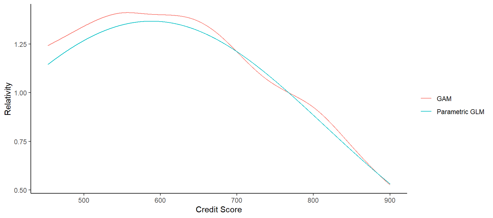
A spline to examine the relationship between the age of the insured and the claim deverity has also been produced. The most appropriate parametric form is as follows: \[s(Insured.age) \approx Insured.age + Insured.age^2\]
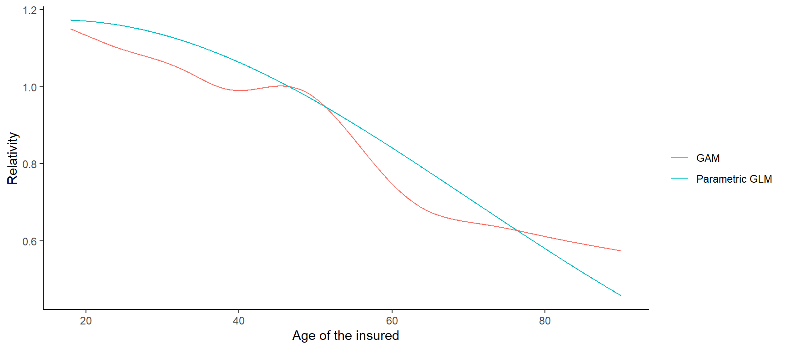
The link between the response variable and the car age is approximated by
\[s(Car.age) \approx Car.age + Car.age^2 + Car.age^3\]
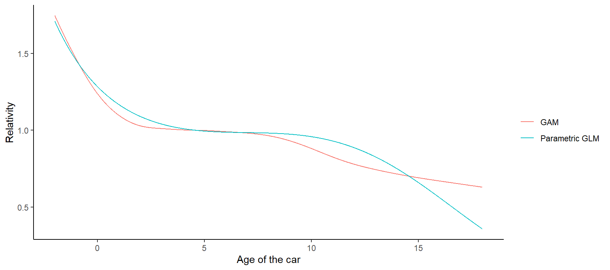
Finally, the link between the response variable and the number of year(s) without claims is best approximated by
\[s(Years.noclaims) \approx Years.noclaims + Years.noclaims^2 + Years.noclaims^3\]
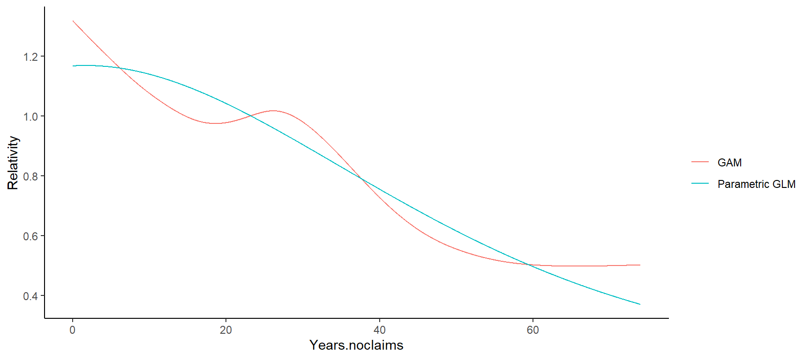
We proceed with the covariate Territory as we did for the analysis of the frequency. The parametric function is:
\[s(terr.code) \approx terr.code + terr.code^2 + terr.code^3\]
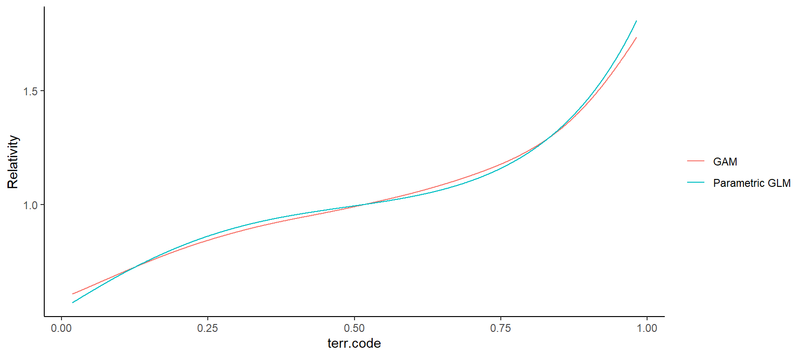
The parameters of the GLM-net were calibrated using cross-validation to obtain the model hyperparameters. Using these values, we can calculate the prediction scores of the model based on all covariates.
glm.score <- as.formula(M_Claim ~ Insured.sex + Marital + Car.use + Region
+ Credit.score + I(Credit.score^2)
+ Insured.age + I(Insured.age^2)
+ Car.age + I(Car.age^2) + I(Car.age^3)
+ Years.noclaims + I(Years.noclaims^2) + I(Years.noclaims^3)
+ terr.code + I(terr.code^2) + I(terr.code^3) )
Result_ <- data.frame()
Result2_ <- data.frame()
for(i in 1:nb.fold) {
learn <- train2[train2$fold != i,]
valid <- train2[train2$fold == i,]
matrix.x <- model.matrix(glm.score, data=learn)[,-1]
y <- learn$M_Claim
lambda.min <- 0.01995262
lambda.1se <- 0.07943282
lambda.select <- lambda.min
fit <- glmnet(matrix.x, y, family = Gamma(link = "log"), relax=FALSE, alpha = 0.6, lambda = lambda.select)
learn$pred <- predict(fit, newx = matrix.x, type='response', lambda = lambda.select)*learn$NB_Claim
matrix.x <- model.matrix(glm.score, data=valid)[,-1]
y <- valid$M_Claim
valid$pred <- predict(fit, newx = matrix.x, type='response', lambda = lambda.select)*valid$NB_Claim
variance <- (sum((learn$AMT_Claim - learn$pred)^2)/(nrow(learn) - length(fit$beta)))
phi <- variance/mean(learn$AMT_Claim)^2
Result_ <- rbind(Result_, c(i, Score.pred.sev(valid$pred, valid$AMT_Claim, phi)/nrow(valid)))
Result2_ <- rbind(Result2_, c(i, Score.pred.sev(valid$pred, valid$AMT_Claim, phi)))
}
## Show results
colnames(Result_) <- c('Fold', "Sc.log", "Sc.MSE")
colnames(Result2_) <- c('Fold', "Sc.log", "Sc.MSE")
tot <- colSums(Result2_)/nrow(train2)
tot$Fold <- 'Total'
Result_ <- rbind(Result_ , tot)
Result_ <- rbind(Result_, Base)
Result_[nb.fold+2,1] <- 'Improvement'
for(i in 2:3){
Result_[nb.fold+2,i] <- Result_[nb.fold+1,i] - Result_[nb.fold+2,i]
}
rownames(Result_) <- NULL
knitr::kable(Result_, align = "ccc", digits = c(0, 5, 5), format.args = list(big.mark = ","))%>%
kable_styling(bootstrap_options = "striped", full_width = F) | Fold | Sc.log | Sc.MSE |
|---|---|---|
| 1 | 9.20427 | 45.11001 |
| 2 | 9.22953 | 20.98561 |
| 3 | 9.24011 | 28.93837 |
| 4 | 9.27740 | 28.99576 |
| 5 | 9.21277 | 17.93211 |
| Total | 9.23286 | 28.56121 |
| Improvement | -0.06228 | -1.87573 |
The same model can be used to compute the scores on the test set.
glm.score <- as.formula(M_Claim ~ Insured.sex + Marital + Car.use + Region
+ Credit.score + I(Credit.score^2)
+ Insured.age + I(Insured.age^2)
+ Car.age + I(Car.age^2) + I(Car.age^3)
+ Years.noclaims + I(Years.noclaims^2) + I(Years.noclaims^3)
+ terr.code + I(terr.code^2) + I(terr.code^3) )
matrix.x <- model.matrix(glm.score, data=train2)[,-1]
y <- train2$M_Claim
lambda.min <- 0.01995262
lambda.1se <- 0.07943282
lambda.select <- lambda.min
fit <- glmnet(matrix.x, y, family = Gamma(link = "log"), relax=FALSE, alpha = 0.6, lambda = lambda.select)
#fit <- glmnet(matrix.x, y, family = "poisson", relax=TRUE, offset = offset, alpha = 0.6, lambda = lambda.select)
train2$pred <- predict(fit, newx = matrix.x, type='response', lambda = lambda.select)*train2$NB_Claim
train2$pred.tele <- train2$pred
matrix.x <- model.matrix(glm.score, data=test2)[,-1]
y <- test2$M_Claim
test2$pred.base <- predict(fit, newx = matrix.x, type='response', lambda = lambda.select)*test2$NB_Claim
variance <- (sum((train2$AMT_Claim - train2$pred)^2)/(nrow(train2) - length(fit$beta)))
phi <- variance/mean(train2$AMT_Claim)^2
Result_ <- data.frame(t(Score.pred.sev(test2$pred.base, test2$AMT_Claim, phi)/nrow(test2)))
Result_ <- cbind('LASSO (optimal)', Result_)
colnames(Result_) <- c("Model", "Sc.log", "Sc.MSE")
Result_all <- rbind(Result_all, Result_)
knitr::kable(Result_all, align = "ccc", digits = c(0, 5, 5), format.args = list(big.mark = ","))%>%
kable_styling(bootstrap_options = "striped", full_width = F) | Model | Sc.log | Sc.MSE |
|---|---|---|
| Base | 9.29504 | 21.82679 |
| GLM (trad.) | 9.27546 | 21.77177 |
| LASSO (optimal) | 9.23357 | 20.23523 |
Instead of using the optimal value of the penalty \(\lambda\) in the elastic-net approach, it is often advised to use a penalty value located at one standard error (\(\lambda_{1se}\)). This helps to obtain a more parsimonious model. The prediction scores of such a model are displayed below.
Result_ <- data.frame()
Result2_ <- data.frame()
for(i in 1:nb.fold) {
learn <- train2[train2$fold != i,]
valid <- train2[train2$fold == i,]
matrix.x <- model.matrix(glm.score, data=learn)[,-1]
y <- learn$M_Claim
lambda.min <- 0.01995262
lambda.1se <- 0.07943282
lambda.select <- lambda.1se
fit <- glmnet(matrix.x, y, family = Gamma(link = "log"), relax=TRUE, alpha = 0.6, lambda = lambda.select)
learn$pred <- predict(fit, newx = matrix.x, type='response', lambda = lambda.select)*learn$NB_Claim
matrix.x <- model.matrix(glm.score, data=valid)[,-1]
y <- valid$M_Claim
valid$pred <- predict(fit, newx = matrix.x, type='response', lambda = lambda.select)*valid$NB_Claim
variance <- (sum((learn$AMT_Claim - learn$pred)^2)/(nrow(learn) - length(fit$beta)))
phi <- variance/mean(learn$AMT_Claim)^2
Result_ <- rbind(Result_, c(i, Score.pred.sev(valid$pred, valid$AMT_Claim, phi)/nrow(valid)))
Result2_ <- rbind(Result2_, c(i, Score.pred.sev(valid$pred, valid$AMT_Claim, phi)))
}
## Show results
colnames(Result_) <- c('Fold', "Sc.log", "Sc.MSE")
colnames(Result2_) <- c('Fold', "Sc.log", "Sc.MSE")
tot <- colSums(Result2_)/nrow(train2)
tot$Fold <- 'Total'
Result_ <- rbind(Result_ , tot)
Result_ <- rbind(Result_, Base)
Result_[nb.fold+2,1] <- 'Improvement'
for(i in 2:3){
Result_[nb.fold+2,i] <- Result_[nb.fold+1,i] - Result_[nb.fold+2,i]
}
rownames(Result_) <- NULL
knitr::kable(Result_, align = "ccc", digits = c(0, 5, 5), format.args = list(big.mark = ","))%>%
kable_styling(bootstrap_options = "striped", full_width = F) | Fold | Sc.log | Sc.MSE |
|---|---|---|
| 1 | 9.21249 | 45.73294 |
| 2 | 9.22998 | 20.68548 |
| 3 | 9.24605 | 29.09385 |
| 4 | 9.28279 | 29.08124 |
| 5 | 9.21318 | 17.88075 |
| Total | 9.23698 | 28.66605 |
| Improvement | -0.05816 | -1.77089 |
The same model can be used to compute the scores on the test set.
glm.score <- as.formula(M_Claim ~ Insured.sex + Marital + Car.use + Region
+ Credit.score + I(Credit.score^2)
+ Insured.age + I(Insured.age^2)
+ Car.age + I(Car.age^2) + I(Car.age^3)
+ Years.noclaims + I(Years.noclaims^2) + I(Years.noclaims^3)
+ terr.code + I(terr.code^2) + I(terr.code^3) )
matrix.x <- model.matrix(glm.score, data=train2)[,-1]
y <- train2$M_Claim
lambda.min <- 0.01995262
lambda.1se <- 0.07943282
lambda.select <- lambda.1se
#fit <- glmnet(matrix.x, y, family = Gamma(link = "log"), relax=FALSE, alpha = 0.6, lambda = lambda.select)
fit <- glmnet(matrix.x, y, family = Gamma(link = "log"), relax=TRUE, alpha = 0.6, lambda = lambda.select)
train2$pred <- predict(fit, newx = matrix.x, type='response', lambda = lambda.select)*train2$NB_Claim
train2$pred.tele <- train2$pred
matrix.x <- model.matrix(glm.score, data=test2)[,-1]
y <- test2$M_Claim
test2$pred.base <- predict(fit, newx = matrix.x, type='response', lambda = lambda.select)*test2$NB_Claim
variance <- (sum((train2$AMT_Claim - train2$pred)^2)/(nrow(train2) - length(fit$beta)))
phi <- variance/mean(train2$AMT_Claim)^2
Result_ <- data.frame(t(Score.pred.sev(test2$pred.base, test2$AMT_Claim, phi)/nrow(test2)))
Result_ <- cbind('LASSO (parsimonious)', Result_)
colnames(Result_) <- c("Model", "Sc.log", "Sc.MSE")
Result_all <- rbind(Result_all, Result_)
knitr::kable(Result_all, align = "ccc", digits = c(0, 5, 5), format.args = list(big.mark = ","))%>%
kable_styling(bootstrap_options = "striped", full_width = F) | Model | Sc.log | Sc.MSE |
|---|---|---|
| Base | 9.29504 | 21.82679 |
| GLM (trad.) | 9.27546 | 21.77177 |
| LASSO (optimal) | 9.23357 | 20.23523 |
| LASSO (parsimonious) | 9.23729 | 20.21870 |
For categorical variables, the relativity values obtained for both GLM-net approaches are displayed below.
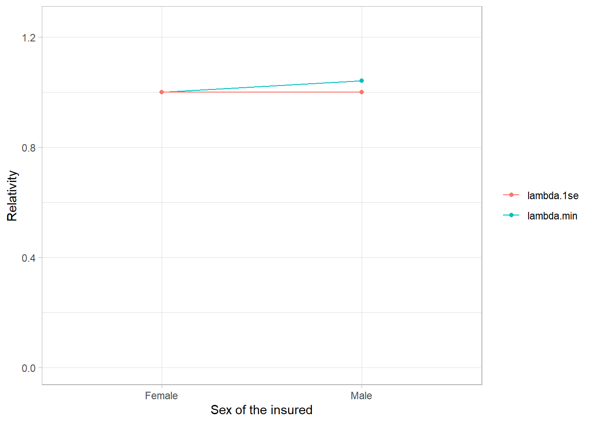
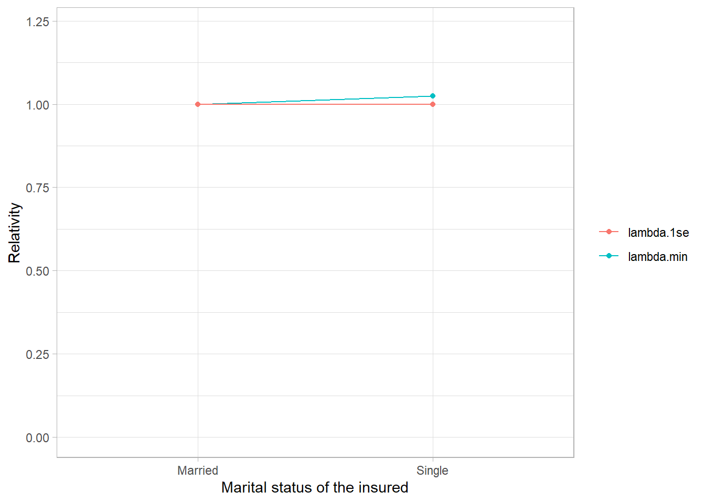
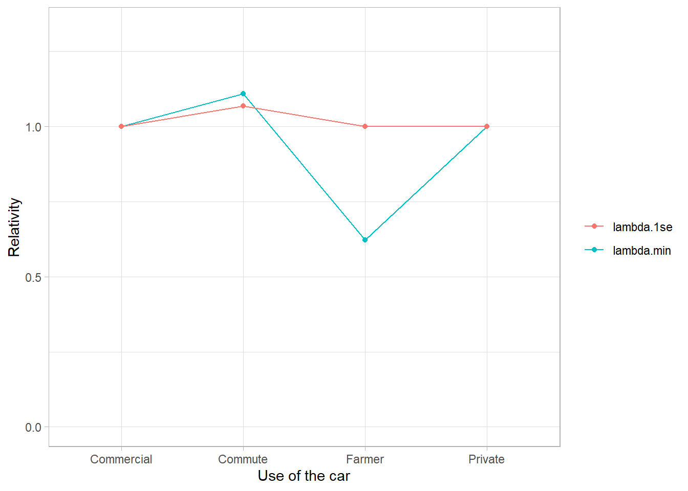
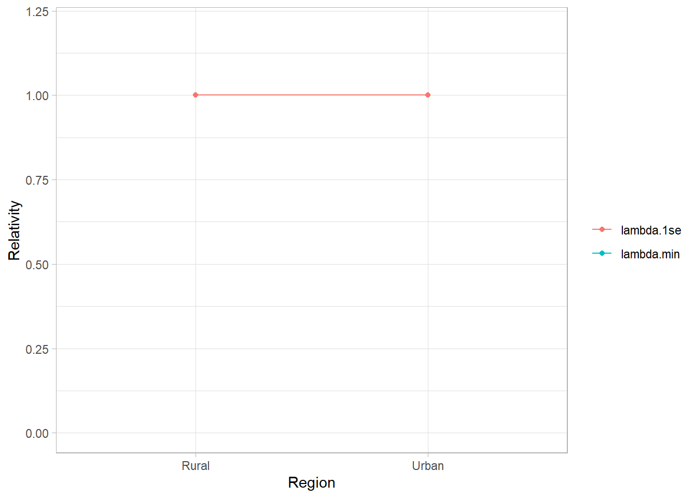
As with categorical variables, the relativities obtained are illustrated below for continuous variables.
glm.score <- as.formula(M_Claim ~ Insured.sex + Marital + Car.use + Region
+ Credit.score + I(Credit.score^2)
+ Insured.age + I(Insured.age^2)
+ Car.age + I(Car.age^2) + I(Car.age^3)
+ Years.noclaims + I(Years.noclaims^2) + I(Years.noclaims^3)
+ terr.code + I(terr.code^2) + I(terr.code^3) )
matrix.x <- model.matrix(glm.score, data=train2)[,-1]
y <- train2$M_Claim
lambda.min <- 0.01995262
lambda.1se <- 0.07943282
lasso.min <- glmnet(matrix.x, y, family = Gamma(link = "log"), relax=FALSE, alpha = 0.6, lambda = lambda.min)
lasso.1se <- glmnet(matrix.x, y, family = Gamma(link = "log"), relax=TRUE, alpha = 0.6, lambda = lambda.1se)
#cbind(coef(lasso.min), coef(lasso.1se))
### Credit Score ###
Credit.score <- seq(from=min(train2$Credit.score), to=max(train2$Credit.score), by=1)
beta <- coef(lasso.1se)[8:9]
curve1 <- exp(beta[1]*Credit.score + beta[2]*Credit.score^2)
base1 <- exp(beta[1]*mean(train2$Credit.score) + beta[2]*mean(train2$Credit.score)^2)
beta <- coef(lasso.min)[8:9]
curve2 <- exp(beta[1]*Credit.score + beta[2]*Credit.score^2)
base2 <- exp(beta[1]*mean(train2$Credit.score) + beta[2]*mean(train2$Credit.score)^2)
curve1 <- curve1/base1
curve2 <- curve2/base2
db <- data.frame(cbind(Credit.score, curve1, curve2))
ggplot()+
geom_line(aes(x=Credit.score, y=curve1, color = 'lambda.1se' ), data=db)+
geom_line(aes(x=Credit.score, y=curve2, color = 'lambda.min' ), data=db)+
guides(color = guide_legend(title = "")) +
labs(x = 'Credit Score',
y = 'Relativity') +
theme_bw()
### Insured.age
Insured.age <- seq(from=min(train2$Insured.age ), to=max(train2$Insured.age ), by=1)
beta <- coef(lasso.1se)[10:11]
curve1 <- exp(beta[1]*Insured.age + beta[2]*Insured.age^2)
base1 <- exp(beta[1]*mean(train2$Insured.age) + beta[2]*mean(train2$Insured.age)^2)
beta <- coef(lasso.min)[10:11]
curve2 <- exp(beta[1]*Insured.age + beta[2]*Insured.age^2)
base2 <- exp(beta[1]*mean(train2$Insured.age) + beta[2]*mean(train2$Insured.age)^2)
curve1 <- curve1/base1
curve2 <- curve2/base2
db <- data.frame(cbind(Insured.age, curve1, curve2))
ggplot()+
geom_line(aes(x=Insured.age, y=curve1, color = 'lambda.1se' ), data=db)+
geom_line(aes(x=Insured.age, y=curve2, color = 'lambda.min' ), data=db)+
guides(color = guide_legend(title = "")) +
labs(x = 'Age of the insured',
y = 'Relativity') +
theme_bw()
### Car Age ###
Car.age <- seq(from=min(train2$Car.age), to=max(train2$Car.age), by=1)
beta <- coef(lasso.1se)[12:14]
curve1 <- exp(beta[1]*Car.age + beta[2]*Car.age^2 + beta[3]*Car.age^3)
base1 <- exp(beta[1]*mean(train2$Car.age) + beta[2]*mean(train2$Car.age)^2 + beta[3]*mean(train2$Car.age)^3)
beta <- coef(lasso.min)[12:14]
curve2 <- exp(beta[1]*Car.age + beta[2]*Car.age^2 + beta[3]*Car.age^3)
base2 <- exp(beta[1]*mean(train2$Car.age) + beta[2]*mean(train2$Car.age)^2 + beta[3]*mean(train2$Car.age)^3)
curve1 <- curve1/base1
curve2 <- curve2/base2
db <- data.frame(cbind(Car.age, curve1, curve2))
ggplot()+
geom_line(aes(x=Car.age, y=curve1, color = 'lambda.1se' ), data=db)+
geom_line(aes(x=Car.age, y=curve2, color = 'lambda.min' ), data=db)+
guides(color = guide_legend(title = "")) +
labs(x = 'Age of the car',
y = 'Relativity') +
theme_bw()
### Years.noclaims
Years.noclaims <- seq(from=min(train2$Years.noclaims ), to=max(train2$Years.noclaims ), by=1)
beta <- coef(lasso.1se)[15:17]
curve1 <- exp(beta[1]*Years.noclaims + beta[2]*Years.noclaims^2 + beta[3]*Years.noclaims ^3)
base1 <- exp(beta[1]*mean(train2$Years.noclaims) + beta[2]*mean(train2$Years.noclaims)^2 + beta[3]*mean(train2$Years.noclaims)^3)
beta <- coef(lasso.min)[15:17]
curve2 <- exp(beta[1]*Years.noclaims + beta[2]*Years.noclaims^2 + beta[3]*Years.noclaims ^3)
base2 <- exp(beta[1]*mean(train2$Years.noclaims) + beta[2]*mean(train2$Years.noclaims)^2 + beta[3]*mean(train2$Years.noclaims)^3)
curve1 <- curve1/base1
curve2 <- curve2/base2
db <- data.frame(cbind(Years.noclaims, curve1, curve2))
ggplot()+
geom_line(aes(x=Years.noclaims, y=curve1, color = 'lambda.1se' ), data=db)+
geom_line(aes(x=Years.noclaims, y=curve2, color = 'lambda.min' ), data=db)+
guides(color = guide_legend(title = "")) +
labs(x = 'Years without claim',
y = 'Relativity') +
theme_bw()
### terr.code
terr.code <- seq(from=min(train2$terr.code ), to=max(train2$terr.code ), by=0.01)
beta <- coef(lasso.1se)[18:20]
curve1 <- exp(beta[1]*terr.code + beta[2]*terr.code^2 + beta[3]*terr.code^3)
base1 <- exp(beta[1]*mean(train2$terr.code) + beta[2]*mean(train2$terr.code)^2 + beta[3]*mean(train2$terr.code)^3)
beta <- coef(lasso.min)[18:20]
curve2 <- exp(beta[1]*terr.code + beta[2]*terr.code^2 + beta[3]*terr.code^3)
base2 <- exp(beta[1]*mean(train2$terr.code) + beta[2]*mean(train2$terr.code)^2 + beta[3]*mean(train2$terr.code)^3)
curve1 <- curve1/base1
curve2 <- curve2/base2
db <- data.frame(cbind(terr.code, curve1, curve2))
ggplot()+
geom_line(aes(x=terr.code, y=curve1, color = 'lambda.1se' ), data=db)+
geom_line(aes(x=terr.code, y=curve2, color = 'lambda.min' ), data=db)+
guides(color = guide_legend(title = "")) +
labs(x = 'Territory (encoded)',
y = 'Relativity') +
theme_bw()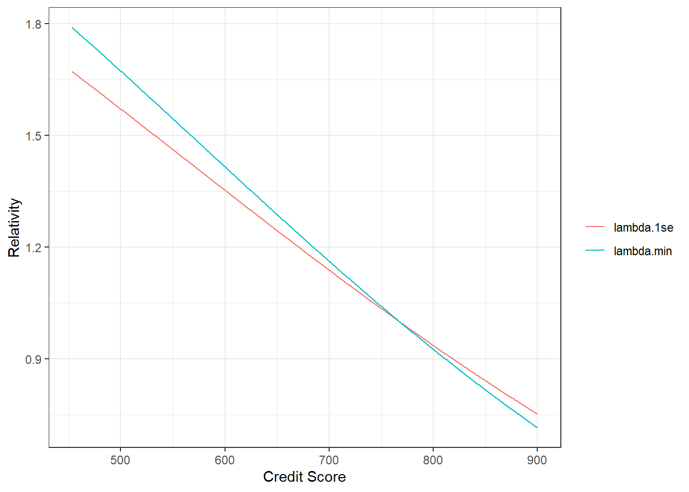
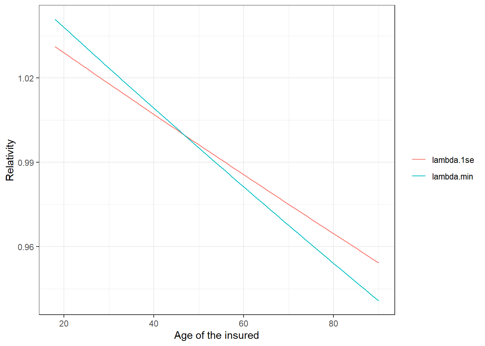
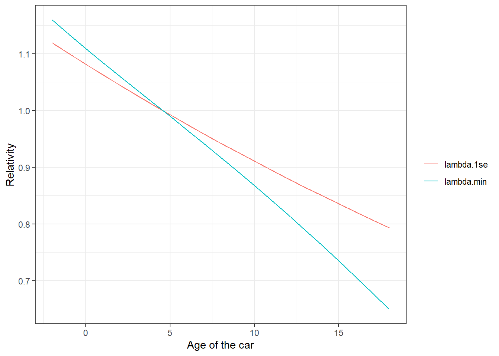
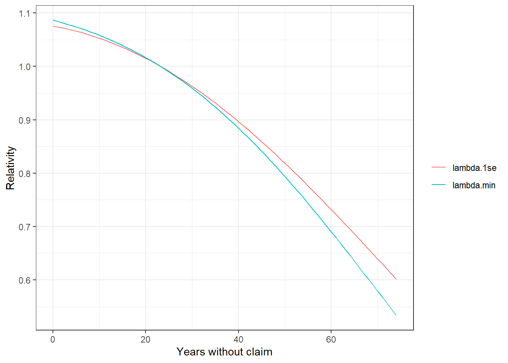
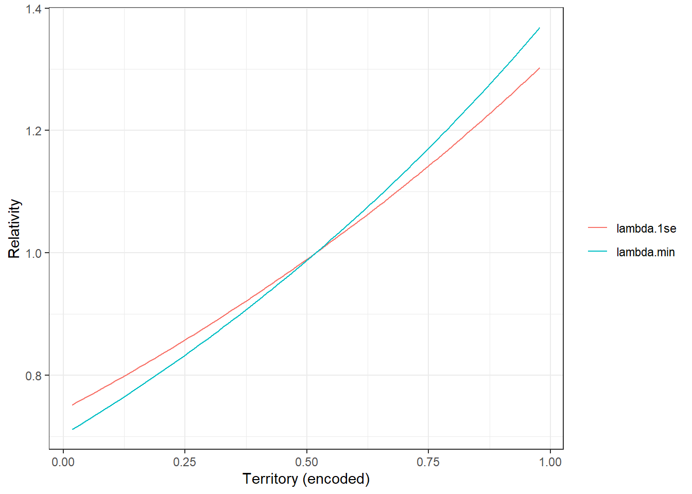
As we did for the analysis of claim frequency, we also consider the XGBoost approach for claim severity. We utilized Bayesian optimization to find the hyperparameters of the model.
Using the hyperparameters we identified, we can calculate the models prediction scores. The obtained scores demonstrate a notable enhancement compared to alternative approaches evaluated.
param <- list(
eta = 0.1442358,
max_depth = 4,
subsample = 0.4589511,
min_child_weight = 121.1358,
booster = "gbtree",
objective = "reg:gamma",
eval_metric = "gamma-nloglik")
set.seed(333)
xgbcv <- xgb.cv(params = param,
nrounds = 120,
data = dtrain,
folds = folds,
prediction = TRUE,
early_stopping_rounds = 10,
verbose = 0,
maximize = F)
variance <- sapply(xgbcv$folds, function(x){sum((train2$AMT_Claim[x]-unlist(xgbcv$pred[x])*train2$NB_Claim[x])^2)/length(train2$AMT_Claim[x])})
mean <- sapply(xgbcv$folds, function(x){mean(train2$AMT_Claim[x])})
phi <- unlist(variance)/mean^2
Sc.log1 <- -dgamma(train2$AMT_Claim[xgbcv$folds$fold1], shape = 1/phi[1], scale = unlist(xgbcv$pred[xgbcv$folds$fold1])*train2$NB_Claim[xgbcv$folds$fold1]*phi[1], log=TRUE)
Sc.log2 <- -dgamma(train2$AMT_Claim[xgbcv$folds$fold2], shape = 1/phi[2], scale = unlist(xgbcv$pred[xgbcv$folds$fold2])*train2$NB_Claim[xgbcv$folds$fold2]*phi[2], log=TRUE)
Sc.log3 <- -dgamma(train2$AMT_Claim[xgbcv$folds$fold3], shape = 1/phi[3], scale = unlist(xgbcv$pred[xgbcv$folds$fold3])*train2$NB_Claim[xgbcv$folds$fold3]*phi[3], log=TRUE)
Sc.log4 <- -dgamma(train2$AMT_Claim[xgbcv$folds$fold4], shape = 1/phi[4], scale = unlist(xgbcv$pred[xgbcv$folds$fold4])*train2$NB_Claim[xgbcv$folds$fold4]*phi[4], log=TRUE)
Sc.log5 <- -dgamma(train2$AMT_Claim[xgbcv$folds$fold5], shape = 1/phi[5], scale = unlist(xgbcv$pred[xgbcv$folds$fold5])*train2$NB_Claim[xgbcv$folds$fold5]*phi[5], log=TRUE)
Sc.MSE <- sapply(xgbcv$folds, function(x){(train2$AMT_Claim[x]-unlist(xgbcv$pred[x])*train2$NB_Claim[x])^2/1000000})
Result_ <- rbind(
c(1,mean(Sc.log1), mean(Sc.MSE[1]$fold1)),
c(2,mean(Sc.log2), mean(Sc.MSE[2]$fold2)),
c(3,mean(Sc.log3), mean(Sc.MSE[3]$fold3)),
c(4,mean(Sc.log4), mean(Sc.MSE[4]$fold4)),
c(5,mean(Sc.log5), mean(Sc.MSE[5]$fold5))
)
Res.sum <- rbind(
c(sum(Sc.log1), sum(Sc.MSE[1]$fold1)),
c(sum(Sc.log2), sum(Sc.MSE[2]$fold2)),
c(sum(Sc.log3), sum(Sc.MSE[3]$fold3)),
c(sum(Sc.log4), sum(Sc.MSE[4]$fold4)),
c(sum(Sc.log5), sum(Sc.MSE[5]$fold5))
)
sum <- c('Total', colSums(Res.sum)/nrow(train2))
Result_ <- data.frame(rbind(Result_, sum))
## Show results
colnames(Result_) <- c('Fold', "Sc.log", "Sc.MSE")
Result_ <- rbind(Result_, Base)
Result_[nb.fold+2,1] <- 'Improvement'
for(i in 2:3){
Result_[,i] <- as.numeric(Result_[,i])
Result_[nb.fold+2,i] <- Result_[nb.fold+1,i] - Result_[nb.fold+2,i]
}
rownames(Result_) <- NULL
knitr::kable(Result_, align = "ccc", digits = c(0, 5, 5), format.args = list(big.mark = ","))%>%
kable_styling(bootstrap_options = "striped", full_width = F) | Fold | Sc.log | Sc.MSE |
|---|---|---|
| 1 | 9.35734 | 44.35244 |
| 2 | 9.14014 | 20.12582 |
| 3 | 9.21035 | 28.22455 |
| 4 | 9.23525 | 28.30773 |
| 5 | 9.09730 | 17.68123 |
| Total | 9.20981 | 27.90189 |
| Improvement | -0.08533 | -2.53505 |
The same model can be used to compute the scores on the test set. We also observe that the XGBoost approach is the most effective.
param <- list(
eta = 0.1442358,
max_depth = 4,
subsample = 0.4589511,
min_child_weight = 121.1358,
booster = "gbtree",
objective = "reg:gamma",
eval_metric = "gamma-nloglik")
set.seed(633)
fit.xgb <- xgb.train(params = param,
nrounds = 120,
data = dtrain)
train2$pred.xgb <- predict(fit.xgb, dtrain, type='response')*train2$NB_Claim
train2$pred.xgb.off <- predict(fit.xgb, dtrain, type='response')
dtest <- xgb.DMatrix(data = data.matrix(test2[, paste(trad.vars)]), label = test2$M_Claim)
#setinfo(dtest,"base_margin",log(test2$expo))
test2$pred.xgb <- predict(fit.xgb, dtest, type='response')*test2$NB_Claim
test2$pred.xgb.off <- predict(fit.xgb, dtest, type='response')
test2$pred.base <- test2$pred.xgb
variance <- (sum((train2$pred.xgb - (train2$AMT_Claim))^2)/(length(train2$AMT_Claim)))
phi <- variance/mean(train2$AMT_Claim)^2
Result_ <- data.frame(t(Score.pred.sev(test2$pred.base, test2$AMT_Claim, phi)/nrow(test2)))
Result_ <- cbind('XGBoost', Result_)
colnames(Result_) <- c("Model", "Sc.log", "Sc.MSE")
Result_all <- rbind(Result_all, Result_)
knitr::kable(Result_all, align = "ccc", digits = c(0, 5, 5), format.args = list(big.mark = ","))%>%
kable_styling(bootstrap_options = "striped", full_width = F) | Model | Sc.log | Sc.MSE |
|---|---|---|
| Base | 9.29504 | 21.82679 |
| GLM (trad.) | 9.27546 | 21.77177 |
| LASSO (optimal) | 9.23357 | 20.23523 |
| LASSO (parsimonious) | 9.23729 | 20.21870 |
| XGBoost | 9.19011 | 20.06725 |
The following graph depicts the most crucial variables in the XGBoost model.
param <- list(
eta = 0.1442358,
max_depth = 4,
subsample = 0.4589511,
min_child_weight = 121.1358,
booster = "gbtree",
objective = "reg:gamma",
eval_metric = "gamma-nloglik")
set.seed(333)
fit.xgb <- xgb.train(params = param,
nrounds = 120,
data = dtrain,
# prediction = TRUE,
verbose = 0,
maximize = F)
importance_matrix <- xgb.importance(dimnames(dtrain)[[2]], model = fit.xgb)
xgb.ggplot.importance(importance_matrix,top_n=10) + theme(text = element_text(size=15))?(caption)
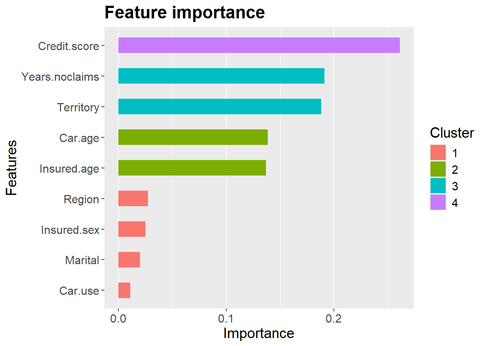